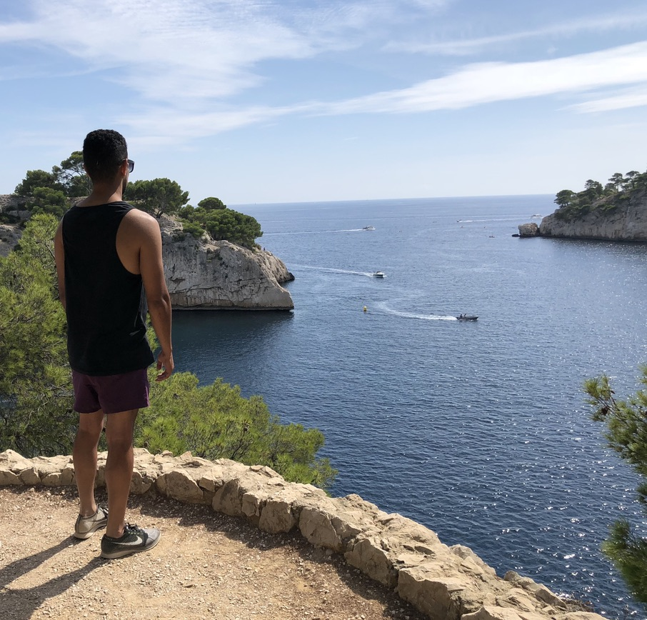

About me
This is me.
I didn't come to web development and UX design through the usual university route — it's something I discovered later in life.
I studied music technology at university, then worked in recording studios, on film sets and in a computer retail store. After that I spent six years as an office admin and project manager for a property development company. Alongside that, I helped set up and manage a local coffee shop, including its branding and logo — which is what led me to UX and UI design and the principles behind a good user experience.
Learning to build
I started with self-study: reading about UX principles, learning Figma and working through Coursera's Foundations of User Experience course. I then joined the 12-week web development bootcamp at Bath Spa University, covering HTML, CSS, JavaScript (ES6), Sass, Bootstrap, Node.js and React, and finishing with a portfolio of projects.
Since then I've kept building. My latest work includes Clock-in Helper, a live React and Supabase app that small businesses use to track staff hours, and a set of complete small-business websites — a business services site, a coffee shop and an online store — each with a hand-coded front end, a Node.js back end and an admin dashboard.
How I work
I've always enjoyed working with customers and clients: understanding what they need and finding the solution that suits them best. That's the same approach I bring to every site — design for the people using it, keep it simple, and make it easy for the owner to run.
Outside work
I go to the gym, cycle, play guitar and do motorsport track days in a car I built with my brothers. I've travelled through New Zealand, Australia, Thailand, America and Europe — these days it's family holidays with my two kids, who keep me busy.
